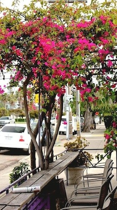

Javanican Coffee House
4338 Cass St (map)
San Diego, CA 92109
(858) 412-4802
Opening Hours
Mon - Sun 7am to 7pm




"You wont get leaf- shaped foam in your drink,
just delicous coffee and fresh food"